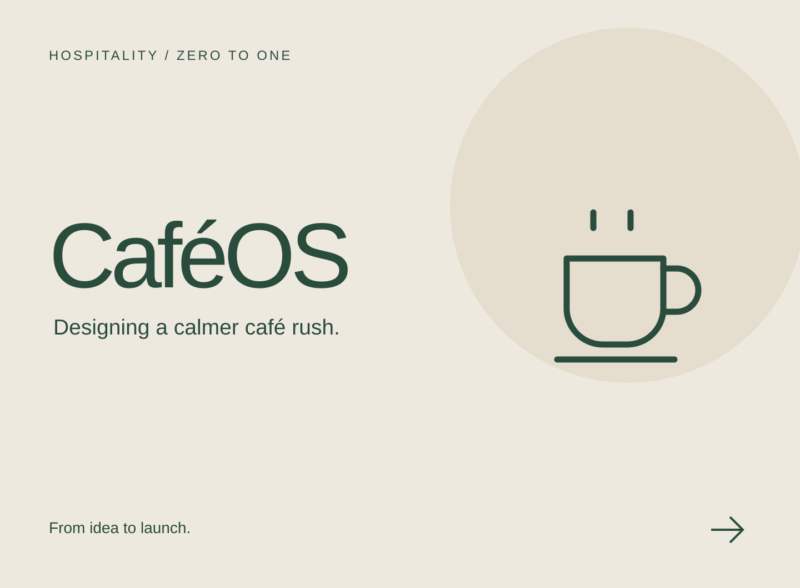
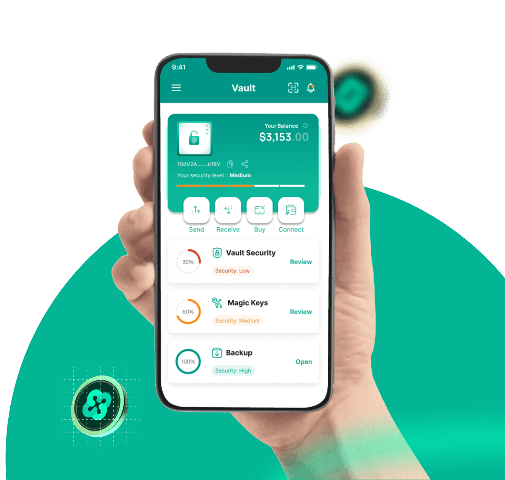
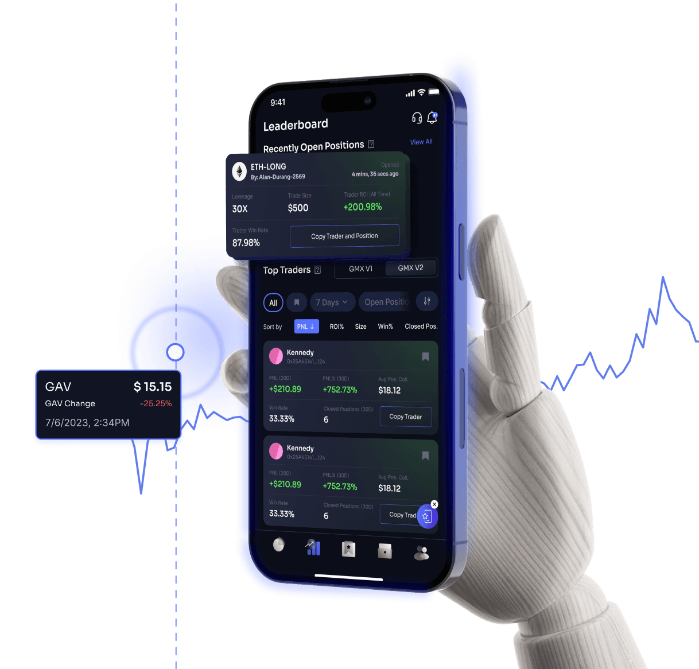
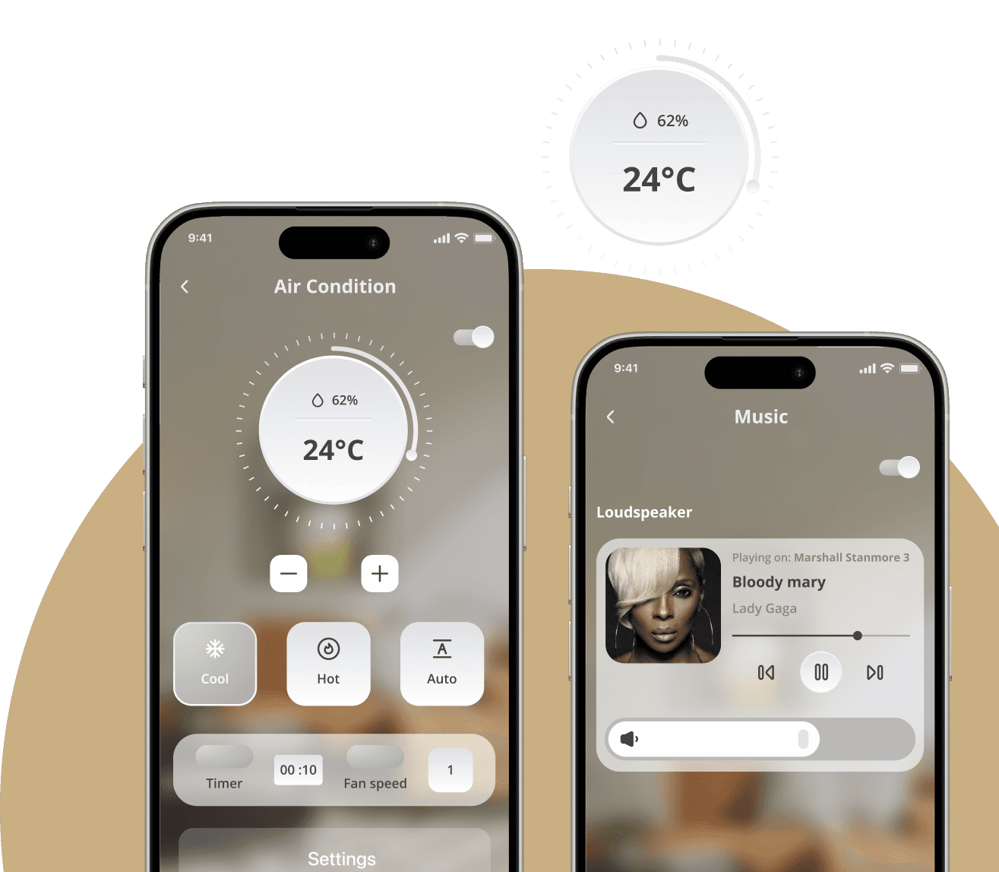
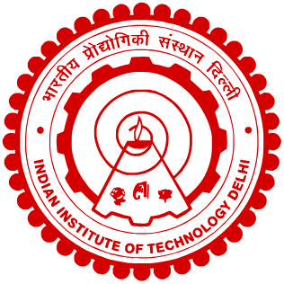

Figma plugin
HTML → Figma
A plugin I built to convert HTML into Figma designs — connecting what’s on the web with what’s on the canvas.
I design clear, intuitive experiences for AI products
and enterprise software.
Connecting website UX, brand systems, campaigns, and events into a clearer enterprise experience.
Explore the Kyvos case study
Designing a calmer café rush with a POS experience built from 0 to 1.
An AI assistant that turns website browsing into a conversation.

A user-centered approach to a self-custody crypto wallet.

Making a decentralized copy-trading experience easier to navigate.
Taking an AI product from the first idea through to launch.
Assistant Manager, Design L1 / Senior Product Designer
Senior UI/UX / Product Designer
Senior Graphic & UI Designer
Graphic / Senior Graphic Designer
An end-to-end ride-booking app, designed from scratch.
A visual exploration of a calmer meditation experience.

Bringing connected-home controls into one mobile experience.
Designing a mobile experience around family relationships.
Design work across Kyvos, Intellicus, and Flow WFM initiatives.
Some ideas don’t wait for a brief.
I make tools for the little things I wish were easier — turning curiosity into things that work.
A plugin I built to convert HTML into Figma designs — connecting what’s on the web with what’s on the canvas.
A complete expense-tracking application, built to bring everyday spending into one place.
A tool I created to help QA teams and content writers analyze content as part of their review process.
A tool for designers to audit their work and get feedback on designs and individual screens.
A Chrome extension I built to capture an entire webpage as a PDF or PNG — from top to bottom.
Small sparks.
Made between sips.

Programme completed · 2026AI-led UX and CX Innovation
for Leadership
Advanced study at IIT Delhi, bringing a strategic perspective to the intersection of artificial intelligence, user experience, and customer experience.
I bring research, visual craft, and product thinking together — staying close to users, collaborating with engineers, and carrying ideas through to execution.